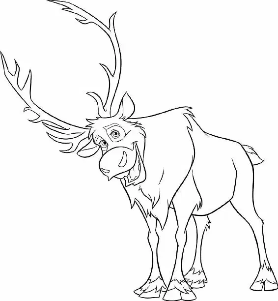

Kristoff brought his pile of supplies to the front counter.
“That’ll be forty, ja?” Oaken said. “Forty?” Kristoff barked. “No, ten.”
“No, see, these are from our winter stock,” Oaken told him. “Where supply and demand have a big problem.”
“You want to talk about a supply-and-demand problem?” Kristoff asked. “I sell ice for a living!”
Anna walked over to the counter and smiled at Kristoff. “Ice. Really?” she said. “That’s a rough business to be in right now.”
“Forty,” Oaken repeated. “But I will throw in a visit to Oaken’s sauna. Hoo, hoo!”
Kristoff and Anna both peered over Oaken’s shoulder to see a family waving from a toasty sauna in a room behind him.
“Ten’s all I got,” Kristoff told him. “Help me out, ja?”
Oaken held up the bag of carrots. “Ten will get you this and no more.”
Kristoff glared at Oaken, seething.
“Just tell me one thing,” Anna said, moving closer to Kristoff. “What was happening on the North Mountain? Did it seem... magical?”
Kristoff pulled down his scarf, revealing his face. He looked down sharply at Anna. “Yes!” he shouted. “Now back up while I deal with this crook here.”
Oaken rose from his chair. He did not appreciate being called a crook. “What did you call me?” he said. He was much taller and wider than Kristoff had expected. Oaken loomed over the counter. Then, with a frown, Oaken swiftly threw Kristoff out of the shop.
Kristoff went flying out the door and landed face-first in a mound of snow next to Sven, who had been waiting patiently outside. Kristoff pulled his head out of the snow. “Ow!” he moaned.
“Goodbye!” Oaken said pleasantly, and slammed the door.
The reindeer snorted and moved over to Kristoff, snuffling and searching in the snow.
“No, Sven,” Kristoff told him. “I didn’t get your carrots.”
The hungry reindeer huffed in his face. Then Kristoff turned his head and spotted something that made him brighten. There was a barn behind the trading post — a warm place to spend the night.
“But I did find us a place to sleep,” he added. “And it’s free.”
Back in the shop, Oaken returned to his other customer. “I’m sorry about this violence,” he told Anna. “I will add a quart of lutefisk so we have good feelings.” He looked over at what she had selected. “Just the outfit and the boots, ja?”
Anna looked at her supplies, and then over at the bag Kristoff had left on the counter. She smiled as an idea occurred to her.
Shortly afterward, Anna left Oaken’s shop and looked around. She could hear singing coming from the barn. She pushed open the door quietly and peered inside. Kristoff was lying against a bale of hay, playing his lute. He was singing to his reindeer... and then, singing as Sven, he finished the song from the reindeer’s point of view.
“Ahem.” Anna cleared her throat. When Kristoff looked over, she smiled. “Nice duet,” she said.
“Oh, it’s just you,” he said when he saw Anna standing in front of him. “What do you want?”
“I want you to take me up the North Mountain,” she declared.
“I don’t take people places,” Kristoff replied. He closed his eyes and lay back in the hay.
“Let me rephrase that,” Anna said. She threw the sack of supplies she had just bought over to Kristoff. They were exactly the items he’d wanted.
“Umph!” he grunted as the heavy bag landed on his chest.
“Take me up the North Mountain,” she ordered. Kristoff regarded her carefully. He was not used to taking orders. And he especially couldn’t see any reason to follow Anna’s.
“Look,” Anna said. “I know how to stop this winter.”
Kristoff hesitated. If the cold weather stopped, he might be able to sell his ice down in Arendelle again. “We leave at dawn,” he said finally. “And you forgot the carrots for Sven.”
Anna dropped a bag of carrots on Kristoff’s face.
“Ooh!” he said.
“Oops, sorry, sorry,” Anna said. Then she caught herself. She was trying to take charge, after all. “We leave now,” she declared. “Right now!”
Kristoff looked over at Sven and offered him a carrot. Sven took a healthy bite. So did Kristoff. They looked at the stranger before them as they chewed. They both knew she had no clue what was ahead.
